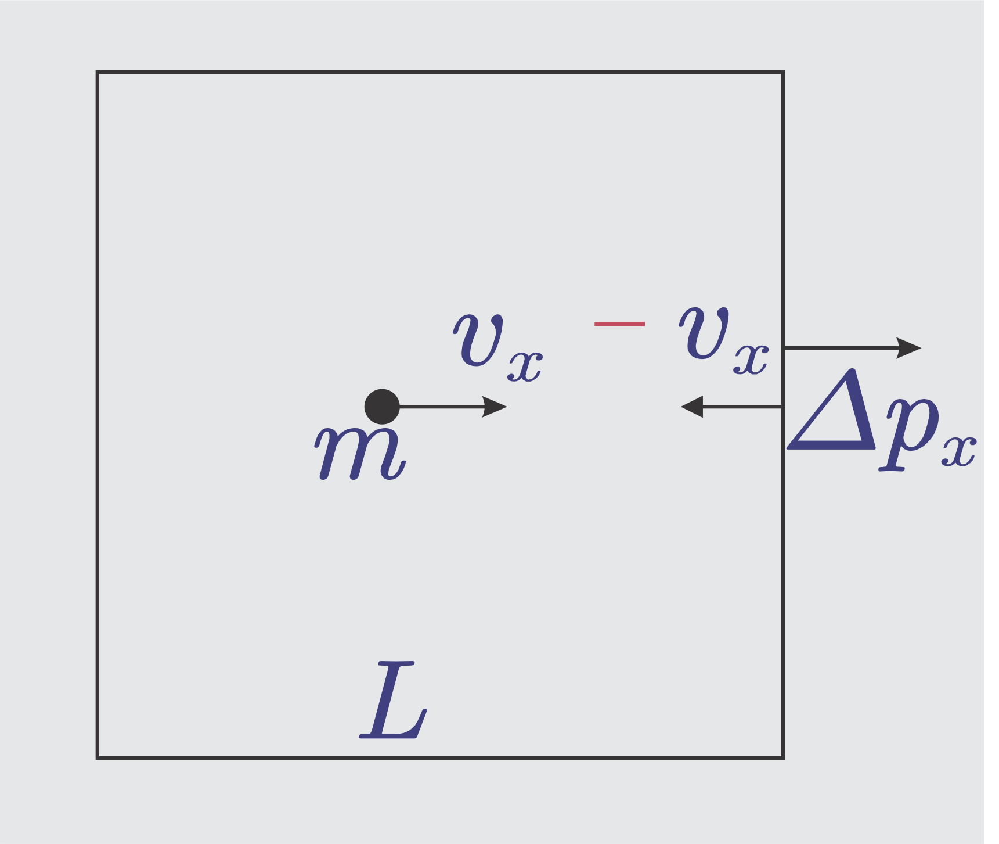

# Teori Kinetik Gas --- ### Mol, Massa, Massa Molar - Apa yang dimaksud dengan keadaan STP (*standard temperature pressure*) atau keadaan normal atau keadaan standard? - Keadaan standard atau STP adalah keadaan dimana tekanan gas p = 1 atm = 1,013 × 10<sup>5</sup> Pa dan suhu gas 0 °C atau 273 Kelvin. - Pada keadaan standard, 1 mol gas menempati volume sebesar 22.400 cm<sup>3</sup> sedangkan jumlah atom dalam 1 mol sama dengan : 6,02 × 10<sup>23</sup> yang disebut bilangan Avogadro (N<sub>A</sub>). --- - Jadi pada keadaan standard jumlah atom dalam tiap-tiap cm<sup>3</sup> adalah: ###### `$$\frac{6,02 × 10^{23}}{22.400}=2,68 × 10^{19} atom/cm^3$$` - Banyaknya mol suatu gas adalah hasil bagi antara jumlah atom dalam gas itu dengan bilangan Avogadro. ###### `$$n=\frac{N}{N_A}$$` --- keterangan: - n = jumlah mol gas (mol) - N = jumlah atom - N<sub>A</sub> = bilangan Avogadro - Artinya: dalam satu mol zat/gas terdapat sebanyak 6,02 × 10<sup>23</sup> buah partikel atau molekul. Hubungan antara mol dan massa: ###### `$$n=\frac{m}{M}$$` --- keterangan: - n = jumlah mol gas (mol) - m = massa zat (gr) - M = Massa molar/massa setiap 1 mol zat (gram/mol) --- ### Persamaan Gas Ideal ###### `$$\frac{P_1V_1}{T_1}=konstan$$` yang dapat dituliskan sebagai ###### `$$PV=NkT$$` atau ###### `$$PV=nRT$$` --- keterangan: - P = tekanan gas pada suhu tetap (Pa) - V = Volume gas pada tekanan tetap (m<sup>3</sup>) - T = suhu mutlak gas pada volume tetap (K) - N = jumlah atom - k = konstanta Boltzman (1,38 × 10<sup>-23</sup> joule/K) - n = jumlah mol gas (mol) - R = konstanta gas (8,314 joule/mol.K) --- ### Karakteristik Gas Ideal 1. Gas ideal terdiri atas partikel-partikel (atom-atom ataupun molekul-molekul ) dalam jumlah yang besar sekali dan jarak antar molekul lebih besar daripada ukuran masing masing gas 2. Ukuran partikel sangat kecil sehingga dapat diabaikan. 3. Partikel-partikel tersebut senantiasa bergerak lurus secara acak/sembarang dan tetap berlaku Hukum Newton tentang gerak. --- 4. Tumbukan antara partikel ataupun antara partikel dengan dinding terjadi secara lenting sempurna (energi kinetik tetap), partikel dianggap sebagai bola yang keras. 5. Gaya antar partikel diabaikan kecuali saat tumbukan yang berlangsung sangat singkat. 6. Gas dipertimbangkan sebagai titik materi sehingga semua molekul adalah identik. --- ### Energi Kinetik  --- - Andaikan sebuah kubus dengan panjang sisi *L*, diisi dengan gas ideal sebanyak *N* molekul. Molekul gas bergerak dengan kecepatan *v*. - Pandang satu molekul gas yang bermassa *m*. Kecepatannya dalam arah sumbu x adalah *v<sub>x</sub>*. - Momentum mula-mula molekul adalah **`$p_x=mv_x$`**. Jika molekul menumbuk dinding, momentumnya akan menjadi **`$p_x'=-mv_x$`**, sehingga perubahan momentumnya adalah **`$\Delta p_x=p_x'-p_x=-2mv_x$`**. --- - Waktu antara tumbukan di tempat yang sama adalah **`$\Delta t=\frac{2L}{v_x}$`**. - Gaya rata-rata yang terjadi pada dinding kanan untuk satu molekul: `$$\overline{F_x}=\frac{\Delta p_x}{\Delta t}=\frac{-2mv_x}{\frac{2L}{v_x}}$$` ###### `$$\overline{F_x}=\frac{mv^2_x}{L}$$` --- - Karena terdapat N molekul gas, gaya rata-rata pada dinding kanan menjadi `$$\overline{F_x}=N\frac{mv^2_x}{L}$$` - dan karena menurut anggapan gas ideal, `$\overline {v^2_x}=\overline {v^2_y}=\overline {v^2_z}$`, sementara `$\overline {v^2}=\overline {v^2_x}+\overline {v^2_y}+\overline {v^2_z}$`, maka **`$$\overline {v^2}=3\overline {v^2_x}$$`** --- - Persamaan di atas menjadi `$$\overline{F_x}=N\frac{mv^2}{3L}$$` - Luas penampang tiap sisi adalah **`$A=L^2$`**. - Tekanan pada tiap sisi, **`$P=\frac{F}{A}=\frac{N\frac{mv^2}{3L}}{L^2}$`**. ###### `$$PV=\frac{Nmv^2}{3}$$` --- - Energi kinetik rata-rata setiap molekul **`$E_k=\frac{1}{2}mv^2$`**, sehingga didapatkan hubungan ###### `$$PV=\frac{2}{3}NE_k$$` - Dari persamaan `$PV=NkT$`, diperoleh ###### `$$E_k=\frac{3}{2}kT$$` inilah **energi kinetik rata-rata per molekul** --- ### Kecepatan Molekul - Kecepatan molekul dapat dicari dari persamaan berikut: `$$\begin{equation}E_k=\frac{3}{2}kT\end{equation}$$` `$$\begin{equation}E_k=\frac{1}{2}mv^2\end{equation}$$` ###### `$$v_{rms}=\sqrt{\frac{3kT}{m}}$$` --- ### Usaha oleh Gas Ideal --- - Sebuah bejana dengan penutup piston di atasnya, dipanaskan sehingga memuai dan piston terangkat ke atas sejauh *dS*. Usaha yang dilakukan adalah **`$dW=F.dS=PA.dS$`**. Karena **`$A.dS=dV$`** maka **`$dW=P.dV$`** atau: ###### `$$W=\int^{V_2}_{V_1} P.dV$$` --- Beberapa kemungkinan yang ada: ##### 1. Pemuaian isokhorik - Karena *`$dV=0$`*, `$W=\int^{V_2}_{V_1} P.dV$` menjadi **`$W=P\int^{V_2}_{V_1} 0$`** saja. Atau, **`$W=0$`** --- ##### 2. Pemuaian isobaris - Karena *P* tetap, `$W=\int^{V_2}_{V_1} P.dV$` menjadi **`$W=P\int^{V_2}_{V_1} dV$`** saja. Atau, **`$W=P(V_2-V_1)=P\Delta V$`** <img src="../resources/images/td03.png" height="300px"> --- ##### 3. Pemuaian isotermal - Dari persamaan gas ideal, kita tahu bahwa `$PV=nRT$` atau `$P=\frac{nRT}{V}$`. Usahanya menjadi: **`$W=\int^{V_2}_{V_1} \frac{nRT}{V}.dV=nRT\int^{V_2}_{V_1} \frac{dV}{V}=nRT[\ln V_2-\ln V_1]=nRT \ln \frac{V_2}{V_1}$`**. <img src="../resources/images/td04.png" height="300px"> --- ##### 4. Pemuaian adiabatis - Pemuaian adiabatis adalah proses pemuaian di mana gas dipanaskan dengan cepat sehingga volume bertambah dengan sangat cepat dan tidak sempat ada pemindahan panas dari gas ke dinding, atau dari sistem ke lingkungan. Dalam proses ini, bila volume naik, tekanan akan cepat turun. Berlaku **`$PV^{\gamma}=konstan$`**, dengan γ = indeks adiabatis, untuk gas monoatomik bernilai 5/3 dan untuk gas diatomik bernilai 7/5. --- - Usahanya **`$W=\int^{V_2}_{V_1} P.dV=\int^{V_2}_{V_1}C.V^{-\gamma}dV=\frac{C}{1-\gamma}[V^{1-\gamma}_2-V^{1-\gamma}_1]$`**. <img src="../resources/images/td05.png" height="300px"> --- ### Prinsip Ekuipartisi dan Energi Dalam #### Energi Dalam - Gas dapat bergerak baik secara translasi, rotasi maupun vibrasi. Karena gerakan itu, gas memiliki energi kinetik. Kumpulan energi itu disebut sebagai energi dalam (**U**). - Bila gas diberi tambahan panas sebesar **ΔQ**, panas itu akan dipakai untuk menambah energi dalam **U** dan melakukan usaha **W** (Hukum Termodinamika I). --- ###### `$$\Delta Q=W+\Delta U$$` keterangan: - Q = Panas/Usaha yang diberikan terhadap sistem (J) - W = Panas/Usaha yang dikerjakan sistem (J) - U = Energi dalam (J) --- Beberapa kemungkinan yang ada: 1. Pemuaian isokhorik **`$W=0$`**, sehingga *`$\Delta Q=\Delta U$`* 2. Pemuaian isobaris **`$W\not = 0$`**, sehingga *`$\Delta Q=W+\Delta U$`* 3. Pemuaian isotermal **`$\Delta U= 0$`**, sehingga *`$\Delta Q=W$`* 4. Pemuaian adiabatis **`$Q= 0$`**, sehingga *`$W=-\Delta U$`* --- #### Prinsip Ekuipartisi ##### 1. Gas monoatomik - Gas monoatomik dapat bergerak secara translasi ke arah *X*, *Y* dan *Z*. Kecepatannya masing-masing *v<sub>x</sub>*, *v<sub>y</sub>* dan *v<sub>z</sub>*. Energi kinetiknya masing-masing adalah **`$\frac 1 2 mv_x^2$`**, **`$\frac 1 2 mv_y^2$`** dan **`$\frac 1 2 mv_z^2$`**. - Gerak rotasi dan vibrasi pada gas monoatomik dapat diabaikan karena ukuran atom yang dianggap sangat kecil. Karena itu, molekul gas monoatomik dikatakan memiliki **3** derajat kebebasan --- - Energi dalam gas monoatomik adalah total dari energi kinetiknya. `$$U=\frac 1 2 mv_x^2+\frac 1 2 mv_y^2+\frac 1 2 mv_z^2=\frac 3 2 mv_x^2$$` `$$U=\frac 3 {2.3} mv^2=\frac 1 2 mv^2=\frac 3 2 kT$$` Secara umum, ###### `$$U=\frac 3 2 kT=\frac f 2 kT$$` dengan **f** adalah derajat kebebasan. --- ##### 2. Gas diatomik Gas diatomik dapat bergerak secara: - **Translasi** ke arah *X*, *Y* dan *Z*. Kecepatannya masing-masing *v<sub>x</sub>*, *v<sub>y</sub>* dan *v<sub>z</sub>*. Energi kinetiknya masing-masing adalah **`$\frac 1 2 mv_x^2$`**, **`$\frac 1 2 mv_y^2$`** dan **`$\frac 1 2 mv_z^2$`**. - **Rotasi** terjadi dalam dua arah (*X* dan *Z*) karena momen inersia untuk rotasi dalam sumbu *Y* kecil dan dapat diabaikan. Kecepatan sudutnya masing-masing *ω<sub>x</sub>* dan *ω<sub>z</sub>*. Energi kinetiknya masing-masing adalah **`$\frac 1 2 I\omega_x^2$`** dan **`$\frac 1 2 I\omega_z^2$`**. --- - **Vibrasi** terjadi dalam satu arah (*Y*), karena vibrasi dalam sumbu *X* dan *Z* kecil dan dapat diabaikan. Energi kinetiknya adalah **`$E_{vib}=\frac 1 2 ky^2$`** dan **`$E_{kin}=\frac 1 2 mv_y^2$`**. - Energi dalam gas diatomik adalah total dari energi kinetiknya. `$$U=\frac 3 2 mv_x^2+\frac 1 2 I\omega_x^2+\frac 1 2 I\omega_z^2+\frac 1 2 ky^2+\frac 1 2 mv_y^2$$` dalam perhitungan terkini, ternyata `$\frac 1 2 I\omega_x^2=\frac 1 2 kT$` dan `$\frac 1 2 ky^2=\frac 1 2 kT$` --- `$$U=\frac 7 2 kT$$` - Karena itu, molekul gas diatomik dikatakan memiliki **7** derajat kebebasan. - Secara umum, ###### `$$U=\frac 7 2 kT=\frac f 2 kT$$` dengan **f** adalah derajat kebebasan. --- #### Energi Dalam untuk Banyak Molekul - Prinsip ekuipartisi menyatakan bahwa energi dalam gas dapat dipecah-pecah menjadi energi dalam per molekul, *`$U=\frac f 2 kT$`*. Karena itu, untuk sejumlah *N* molekul, total energi dalamnya adalah: ###### `$$U=\frac f 2 NkT=\frac f 2 nRT$$` --- ### Hukum II Termodinamika - Menurut Kelvin-Planck, tidak mungkin membuat mesin yang bekerja dalam suatu siklus dan menghasilkan seluruh kalor yang diserapnya menjadi usaha. - Tidak mungkin seluruh panas dari reservoir panas diubah menjadi usaha. Sebagian panas harus diberikan ke reservoir dingin. - Menurut Clausius, tidak mungkin panas mengalir dari reservoir dingin ke reservoir panas, tanpa adanya usaha dari luar. - Dalam setiap siklus, entropi akan semakin besar atau tetap sama. --- ##### Siklus Carnot --- - Siklus Carnot: efisiensi maksimal yang bisa diperoleh. - Siklus Carnot terdiri atas ekspansi isotermik, dilanjutkan ekspansi adiabatik, kembali kompresi isotermik dan di lanjut kompresi adiabatik untuk kembali seperti semula. Berikut gambar grafik hubungan tekana dengan volume dari siklus Carnot. - Effisiensi maksimum mesin Carnot: Ketika mesin mengubah energi kalor menjadi energi mekanik (usaha), Perbandingan antara besar usaha yang dilakukan sistem (**W**) terhadap energi kalor yang diserapnya (**Q<sub>1</sub>**) disebut sebagai efisiensi mesin. --- ###### `$$\eta=\frac W {Q_1} \times 100\%$$` Oleh karena usaha `$W=Q_1–Q_2$`, maka ###### `$$\eta=\Big(1-\frac {Q_2} {Q_1}\Big) \times 100\%$$` ###### `$$\eta=\Big(1-\frac {T_2} {T_1}\Big) \times 100\%$$` --- keterangan: - η = efisiensi - W = Usaha (J) - Q<sub>1</sub> = Kalor yang diberikan pada reservoir panas - Q<sub>2</sub> = Kalor yang diserap pada reservoir dingin - T<sub>1</sub> = Suhu pada reservoir panas - T<sub>2</sub> = Suhu pada reservoir dingin --- ##### Refrigerator - Koefisien Performansi: ###### `$$K_P=\frac {Q_2}{W}=\frac {Q_2}{Q_1-Q_2}=\frac {T_2}{T_1-T_2}%$$` keterangan: - K<sub>P</sub> = Koefisien Performansi - W = Usaha (J) - Q<sub>1</sub> = Kalor yang diberikan pada reservoir panas - Q<sub>2</sub> = Kalor yang diserap pada reservoir dingin - T<sub>1</sub> = Suhu pada reservoir panas - T<sub>2</sub> = Suhu pada reservoir dingin